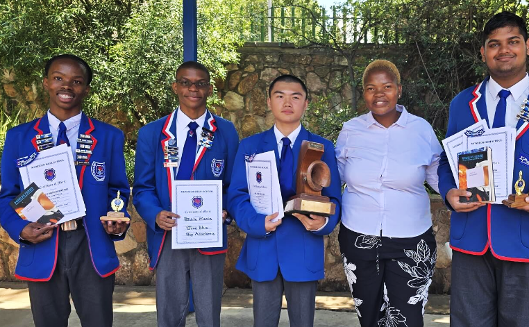
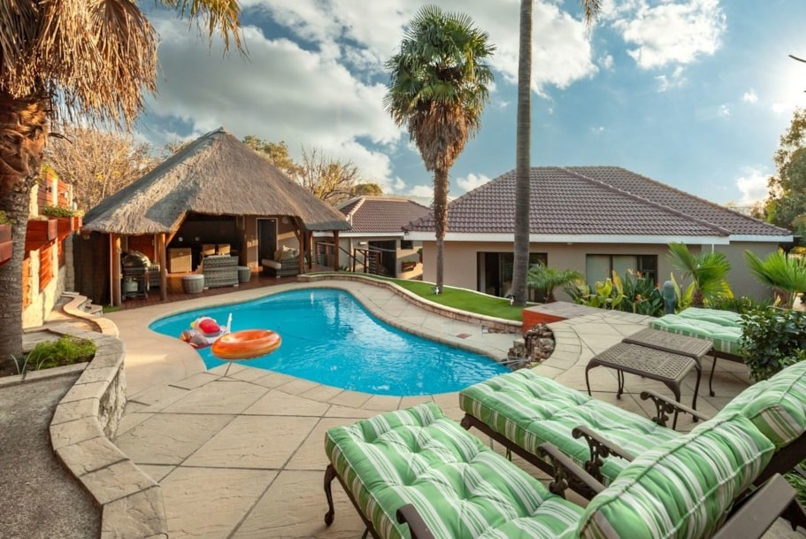
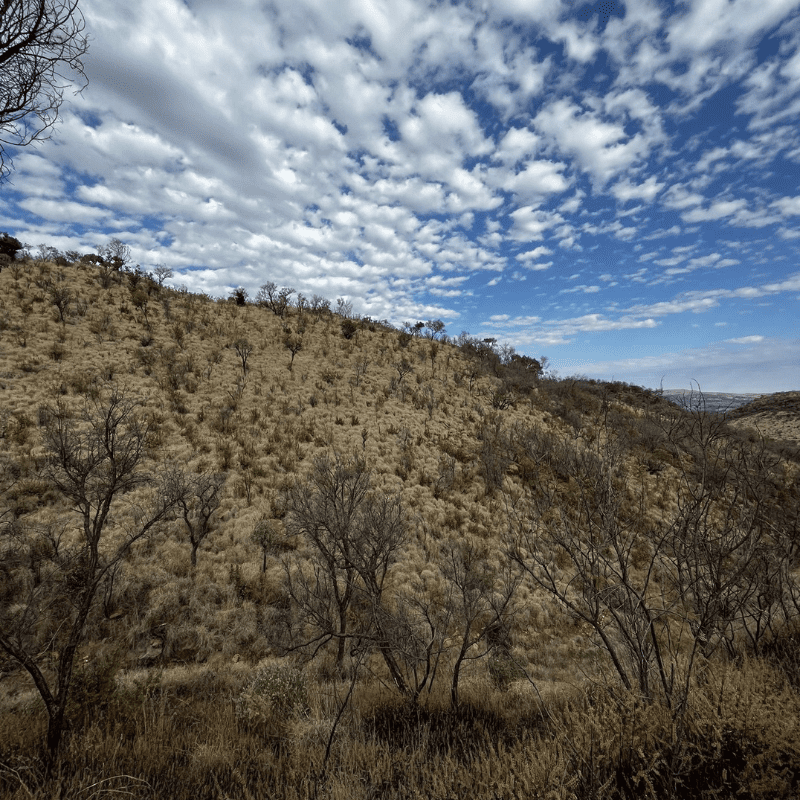

Community Achievements
Celebrating milestones, progress, and impact across Mondeor

⚽ Bafana Bafana World Cup Qualification
The qualification of Bafana Bafana for the FIFA World Cup stands as one of the most defining sporting achievements in South Africa’s modern football history. After years of inconsistency, restructuring, and rebuilding phases within the national team setup, this milestone represents a turning point in how South African football is perceived both locally and internationally. The journey to qualification was not a simple one; it involved overcoming strong opposition across the African qualification stages, dealing with pressure from fans and media, and rebuilding confidence within a squad that has historically struggled to maintain long-term consistency. For communities such as Mondeor, this achievement is deeply meaningful because it reflects the possibility of local talent reaching global platforms.
Beyond the celebration, this achievement highlights the importance of long-term investment in football development structures across the country. Many of the players in the squad came through local school leagues, township academies, and regional development programs, proving that South Africa has a strong foundation of raw talent that can be nurtured into elite performance.

🎓 Academic Excellence in Mondeor Schools
Academic performance within Mondeor schools has undergone a significant transformation, marked by a steady increase in learners achieving distinctions across core academic subjects. This improvement is not accidental but rather the result of years of structured academic planning, dedicated teaching staff, and a growing culture of discipline and ambition among students. Schools have implemented more focused learning strategies, extended study sessions, and targeted intervention programs for learners who require additional academic support. These combined efforts have helped raise overall performance standards and positioned Mondeor as a community that values education as a foundation for future success.
Schools are increasingly collaborating with external educational programs, mentorship initiatives, and scholarship providers to ensure that learners are not only academically successful but also prepared for real-world challenges. As a result, Mondeor is steadily developing a reputation as an educationally driven community producing competitive and capable future professionals.

🏡 Rising Property Values in Mondeor
The steady increase in property values within Mondeor reflects broader patterns of urban development, improved infrastructure, and growing residential demand in the area. Over the past several years, the suburb has undergone noticeable transformation, with better-maintained roads, improved municipal services, and increased private sector investment contributing to its rising desirability. Homebuyers and investors are increasingly viewing Mondeor as a stable, strategically located suburb that offers both convenience and long-term value appreciation. This shift in perception has created a competitive housing market where demand often exceeds available supply.
This growth has had significant ripple effects on the local economy and community structure. Long-term homeowners have seen substantial increases in property equity, while new developments have introduced modern housing designs and upgraded residential facilities. The rise in property value has also encouraged improvements in surrounding infrastructure such as retail centers, schools, and transport services, creating a more integrated and functional urban environment.
🏑 Girls Hockey Team National Success
The success of Mondeor’s girls hockey teams at national level competitions represents a major achievement in school sports development and youth athletic excellence. These teams have demonstrated exceptional commitment, discipline, and teamwork over several competitive seasons, allowing them to qualify and compete against some of the strongest school hockey programs in the country. Their journey reflects not only individual talent but also the strength of coaching programs, school support structures, and community encouragement that have helped shape their success.
This achievement carries broader social significance as it highlights the increasing opportunities available to young female athletes in competitive sports. It challenges traditional barriers and encourages equal participation in school athletics, inspiring younger students to engage in structured sports programs from an early age. The success of these teams has also led to greater visibility for women’s sports within the community, attracting attention from regional selectors and sports development organizations. As a result, Mondeor is becoming recognized as a nurturing ground for disciplined, competitive, and nationally capable young athletes.

🌿 Klipriviersberg Nature Reserve Recognition
The Klipriviersberg Nature Reserve has established itself as one of Gauteng’s most significant natural and ecological landmarks, attracting visitors, researchers, and outdoor enthusiasts from across the region. Its unique combination of natural landscapes, wildlife biodiversity, and historical heritage sites makes it an important conservation area within an otherwise highly urbanized environment. Over time, it has grown in popularity as both a recreational destination and an educational resource, offering guided hikes, nature trails, and opportunities for environmental learning.
The increased recognition of the reserve has strengthened conservation awareness and contributed to the growth of eco-tourism in the region. Environmental organizations and local authorities have implemented initiatives aimed at preserving its natural ecosystems while improving accessibility for visitors. These efforts have helped maintain the balance between conservation and public engagement, ensuring that future generations can continue to benefit from its presence. The reserve also plays a symbolic role for surrounding communities, representing the importance of preserving natural heritage within rapidly developing urban areas.